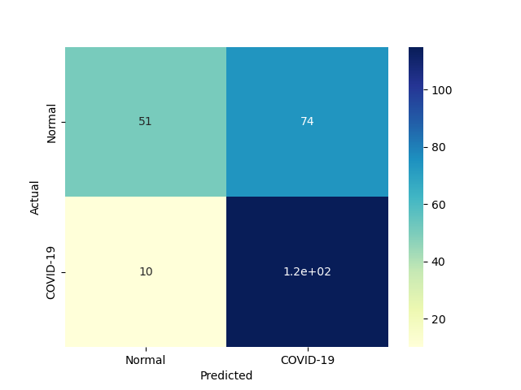
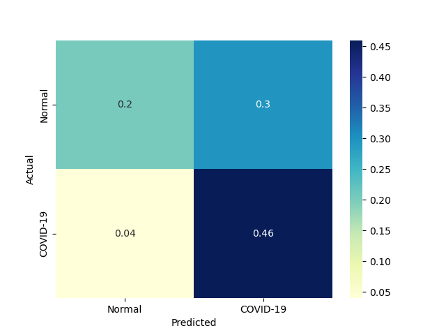
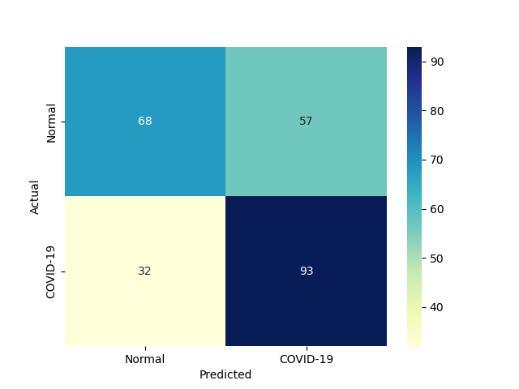
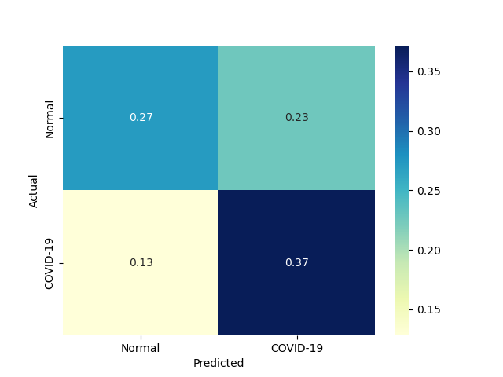

| 4 |
KNeighborsClassifier |
Classifier implementing the k-nearest neighbors vote |
0.000000 |
0.015625 |
115 |
51 |
74 |
10 |
0.920 |
0.408 |
0.608466 |
0.664 |
0.336 |
0.732484 |
0.923908 |
inf |
46.879696 |
 |
 |
 |
| 2 |
BernoulliNBC |
Naive Bayes classifier for multivariate Bernoulli models |
0.000000 |
0.015622 |
93 |
68 |
57 |
32 |
0.744 |
0.544 |
0.620000 |
0.644 |
0.356 |
0.676364 |
0.874281 |
inf |
43.295200 |
 |
 |
 |
| 1 |
RealBoost |
An RealBoost classifier |
57.640305 |
0.000000 |
100 |
56 |
69 |
25 |
0.800 |
0.448 |
0.591716 |
0.624 |
0.376 |
0.680272 |
0.852465 |
0.011802 |
inf |
|
|
|
| 3 |
GaussianNBC |
Gaussian Naive Bayes (GaussianNB) |
0.000000 |
0.000000 |
107 |
27 |
98 |
18 |
0.856 |
0.216 |
0.521951 |
0.536 |
0.464 |
0.648485 |
0.752755 |
inf |
inf |
 |
 |
 |
| 0 |
DiscreteNBC |
DiscreteNBC |
0.593636 |
0.312604 |
80 |
55 |
70 |
45 |
0.640 |
0.440 |
0.533333 |
0.540 |
0.460 |
0.581818 |
0.723634 |
0.980093 |
1.861196 |
 |
 |
|
{kind=link}
{kind=link}
{kind=link}
{kind=link}
{kind=link}
{kind=link}
{kind=link}
{kind=link}